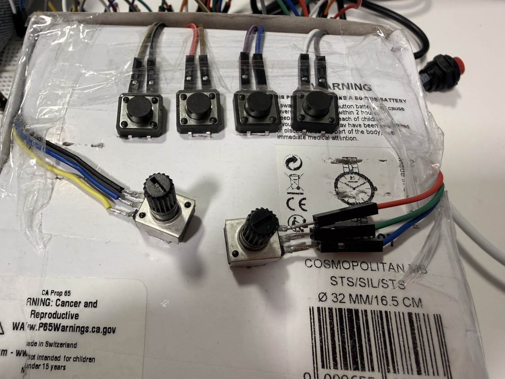

I decided to build a music controller by fixing four buttons and two potentiometers onto a paper box. My first version failed because of poor connections of the wires, they were not making good contact.
After improving the wiring and connections for both the buttons and the potentiometers, the second version was quite successful.
Version 1-1Version 1-2
Version 2-1Version 2-2
The Version 2 is OK, the only issue was the wiring. So later in class, I asked the teacher for additional welding support, which made the connections more stable and reliable.(Thank u Maxim🥹)

Version 3
Step 2 Set up libraries and core structure
I started by importing the Serial and Sound libraries in Processing. This project needs Serial input from my controller,
and SoundFile objects to load and loop multiple audio tracks. I also added a helper function knobAngle()
to convert potentiometer values into rotation angles for the UI knobs.
Step 3 Load multiple loops and define interaction states
I loaded four loop files as four separate channels. Each channel can be turned on/off using a physical button.
The idea is “press once = play, press again = stop”, I created a toggle state system using two arrays:
isLooping[] stores whether a channel is currently looping, and lastPressed[] stores the previous button state for edge detection.
// ====== Audio files ======
SoundFile techno1;
SoundFile techno2;
SoundFile techno3;
SoundFile techno4;
// ====== Toggle playback state ======
boolean[] isLooping = {false, false, false, false}; // currently looping?
boolean[] lastPressed = {false, false, false, false}; // previous button state (for edge detect)
void setup() {
size(700, 240);
techno1 = new SoundFile(this, "loop16.WAV");
techno3 = new SoundFile(this, "loop9.WAV");
techno4 = new SoundFile(this, "loop10.WAV");
techno2 = new SoundFile(this, "loop3.WAV");
}
After testing the initial setup, I realized that the physical button order on my device is different compared to my on-screen UI order, so
I added a mapping table uiToSerial. This allows me to keep the UI layout unchanged while matching real button inputs correctly.
int[] uiToSerial = {3, 2, 1, 0};
Step 4 Build a custom UI (pads + knobs)
I designed a simple DJ-style interface:
four circular pads represent the four channels (they glow when the channel is ON),
two rotary knobs visualize the two potentiometers.
To draw each knob, I mapped a pot value (0–4095) into an angle range and drew a pointer line.
This makes the potentiometer state easy to understand visually.
// pointer angle based on pot value
float ang = knobAngle(v, vmin, vmax);
float px = x + cos(ang) * r * 0.85;
float py = y + sin(ang) * r * 0.85;
stroke(250);
strokeWeight(4);
line(x, y, px, py);
Step 5 Read Serial data, smooth pots, map controls to sound
In serialEvent(), Processing reads one line at a time, then splits the incoming CSV string.
The first four values are buttons, and the last two values are potentiometers.
I apply smoothing to the pot values to reduce noise, then map them to playback rate:
pot1 controls Group A (CH1 + CH2) and pot2 controls Group B (CH3 + CH4).
I store button states into an array, then use uiToSerial to map physical order to UI order.
This ensures that when I press a real button, the correct UI pad lights up and the correct track toggles.
Step 6 Toggle loop playback (press once ON, press again OFF)
To avoid repeated triggering while a button is held down, I used edge detection:
only when the current input is pressed AND the previous input was not pressed, it counts as a “new press”.
Then I toggle between loop() and stop().
void gateToggle(int idx, boolean pressed, SoundFile s) {
if (pressed && !lastPressed[idx]) {
if (!isLooping[idx]) {
s.loop(); // ON
isLooping[idx] = true;
} else {
s.stop(); // OFF
isLooping[idx] = false;
}
}
lastPressed[idx] = pressed;
}
Final Outcome
In the video, you can see how the buttons control the looping of different audio channels
Four buttons toggle four looping tracks (on/off).
POT1 controls playback rate for CH1 + CH2, POT2 controls playback rate for CH3 + CH4.
A custom UI shows pads (loop states), knobs (pot values), and other values.